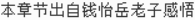

道德经第2章讲解
《道德经》 第二章
天下皆知美之为美，斯恶矣；皆知善之为善，斯不善矣。
故有无相生，难易相成，长短相形，高下相倾，音声相和，前后相随……
是以圣人处无为之事，行不言之教，万物作焉而不辞，生而不有，为而不恃，功成而不居。
夫唯不居，是以不去。
【易解】
天下人都知道美之所以为美，于是就有了令人嫌恶的丑；都知道善之所以为善，于是就有了反面的不善。所以，"有"与"无"相互突显，"难"与"易"相互促成，"长"与"短"相互显现，"高"与"下"相依而存，"音"与"声"相互陪衬，"前"与"后"相互照应——这些"名"相反而相成，迁延不居而不独立自足。因此，圣人从事于无所成名的事务，施行无须仗名立言的劝教，坦荡迎候万物的涌现与流变而不抵触畏避，生养了一切并不拘系自有，做成了什么并不执为仗恃，成就了事业并不矜居功名。就是因为他不矜居功名，所以他不会消逝。